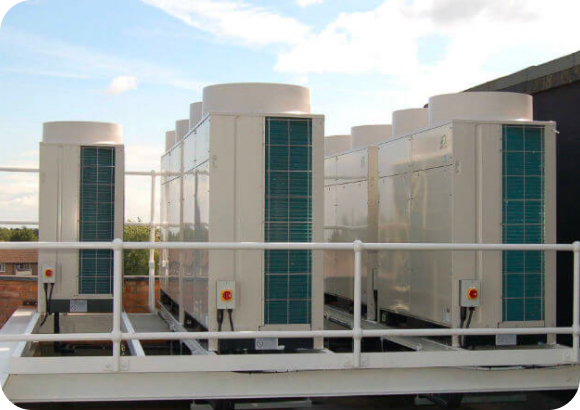
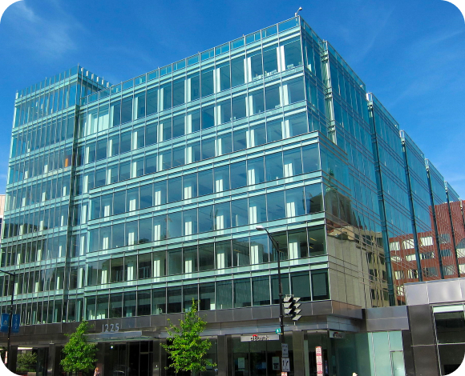

Exploring the Latest Trends in Commercial Air Conditioning Technology
Commercial air conditioning technology continues to evolve rapidly, driven by advancements in energy efficiency, sustainability, and smart building integration. Staying abreast of the latest trends in commercial AC systems can help businesses improve comfort levels, reduce operating costs, and enhance environmental sustainability. In this article, we'll explore some of the cutting-edge trends shaping the commercial air conditioning industry today.
-
Variable Refrigerant
Flow (VRF) SystemsVariable Refrigerant Flow (VRF) systems are gaining popularity in commercial buildings due to their flexibility, energy efficiency, and zoning capabilities. VRF systems use refrigerant as the cooling and heating medium, allowing for individual control of temperature in different zones or areas of a building, thus maximizing comfort and energy savings
 -
Energy Recovery Ventilation (ERV) Systems
Energy Recovery Ventilation (ERV) systems are designed to improve indoor air quality and energy efficiency by recovering heat or coolness from exhaust air before it's expelled from the building. These systems transfer energy between incoming and outgoing air streams, pre-conditioning fresh air and reducing the workload on HVAC equipment
-
Green Building
CertificationWith an increasing focus on sustainability and environmental responsibility, many commercial building owners are pursuing green building certifications, such as LEED (Leadership in Energy and Environmental Design) or ENERGY STAR. These certifications incentivize the use of energy-efficient HVAC systems and sustainable building practices, resulting in lower operating costs and reduced environmental impact
 -
Integration with Building Automation Systems
Commercial air conditioning systems are increasingly integrated with building automation systems (BAS) to centralize control, optimize performance, and streamline operations. BAS allows facility managers to monitor and manage HVAC equipment, lighting, security, and other building systems from a centralized platform, enhancing efficiency and responsiveness
The commercial air conditioning industry is embracing innovative technologies and practices to improve energy efficiency, occupant comfort, and environmental sustainability. By adopting the latest trends in smart HVAC systems, VRF technology, energy recovery ventilation, green building certification, and building automation integration, businesses can create healthier, more efficient, and sustainable indoor environments for their occupants.